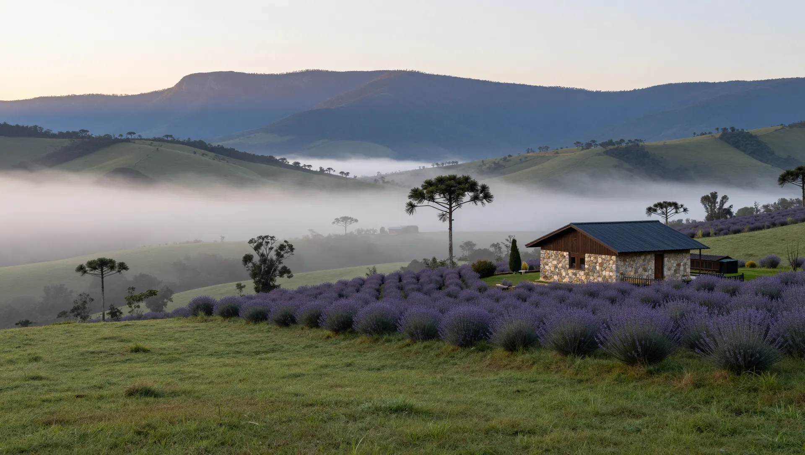

Guia da serra
O que levar, quando ir, como ver as estrelas e como escolher a suíte. Escrito e revisado por quem mora aqui.

O que levar na mala para a Serra da Mantiqueira
A 1.600 metros, o dia pode ter 22 °C e a noite, 4 °C. A lista por estação, e o que a casa já empresta.

Quando a lavanda floresce no Alto Lume
O calendário do campo mês a mês, o melhor horário para fotografar e como é a colheita com quem cuida dele.

Como ver a Via Láctea: guia para iniciantes
Lua, horário, para onde olhar e como acostumar os olhos ao escuro. E o que o telescópio da casa mostra.

Neblina, Lavanda ou Mirante: como escolher a suíte
Qual acomodação combina com cada tipo de viagem, quando cada uma esgota e qual é a mais silenciosa.
Viajar com cachorro para a serra: o que levar e o que combinar
Vacinas, carro, frio e as regras da Casa do Mirante, a acomodação que recebe cachorro.
Três dias no Alto Lume: um roteiro sem pressa
Da chegada às 14h à última manhã, com o que reservar antes e o plano B para dia de chuva.
Como escrevemos e atualizamos estes textos: política editorial.
Como chegar
Reserve o seu
silêncio.
Última parada: o portão de madeira, à direita.
@perfil-demonstrativo